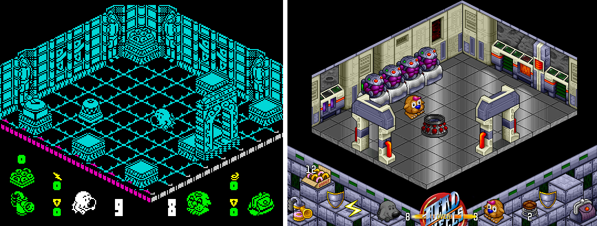

About
Many developers draw inspiration from older games to create some really cool and admirable works. Writing a game, however, is a hard task, so it is no wonder that many decent games never get a modern remake. Arguably, many old games can be quite frustrating for a modern player, so an appealing remake should include ceratain updates for core game mechanics. However, many other games are still enjoyable to play, and it is often sufficient to update graphics and sound to please our modern senses.
At least, this kind of logic is apparent in many great remakes like Head over Heels:

If a game is playable enough, and it doesn't require a complete rewrite, can we upgrade it with less effort? ZX Recoloring Project aims to provide a toolset exactly for this purpose. There is no ambition to provide a solution for implementing all sorts of ideas in all sorts of games. The main focus is on simplicity of use: you can make your favorite game noticeably different less than in an hour, and keep adding new improvements gradually.
The project is maintaned by Maxim Mozgovoy in frustratingly rare moments of his spare time.